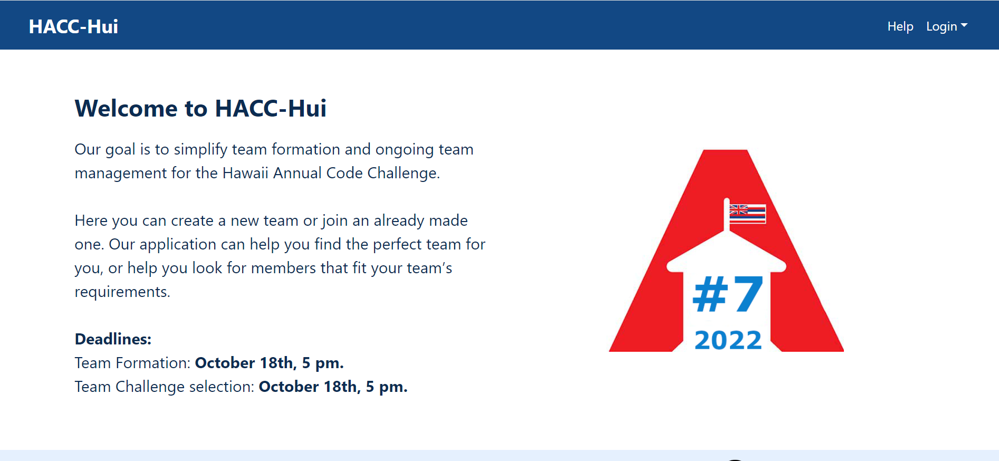

The Hawaii Annual Code Challenge (HACC), based on traditional hackathons, is a month-long challenge held yearly by the State of Hawaii to create a technical solution to modernizing state functions and services. The HACC offers a range of challenges for participants, either independent or organized into teams, to choose from and solve. HACC-Hui facilitates the creation and management of teams for participation in the HACC. Fall 2023 ICS 414 students were tasked with converting the project, which was created in the Semantic UI React framework, into the React Bootstrap framework.
I contributed to both front-end and back-end design, with a primary focus on front-end. Many of my conversions from Semantic UI to Bootstrap either kept the style of the initial component or attempted to improve upon it. A large focus of my project team was uniformity, so much of my design contributions were consistent styling across multiple components. As many of the Semantic UI components have no corresponding Bootstrap components, the use of alternative Bootstrap components to maintain functionality resulted in design changes.
As one of the goals was also converting the class-based components to arrow function components, I was responsible for converting many components to arrow functions and respective React functionality. React state, which keeps track of and reacts to changes in app data, differs between classes and arrow functions, requiring heavy refactoring in the structuring of states and the inclusion and exclusion of component props. Class components use React’s withTracker function to track backend data and re-render upon changes in data, while arrow functions use the corresponding useTracker. As the two functions are implemented differently, much of my contributions also includes the proper inclusion and formatting of useTracker and modifying corresponding component props.
I also contributed to more functional communication between front-end and back-end. Some components were attempting to access and modify database information incorrectly, an issue also caused by inconsistency between components, so I also focused my efforts on understanding the database collections of the project better and adjusting back-end retrievals. I contributed to the implementation of a database reset, one of the primary goals of the project.
Given the relatively convoluted and poorly designed codebase of the initial app, the project was quite difficult to convert. The project made heavy use of my code comprehension skills, as unfamiliarity with the Semantic UI framework and inconsistent components made for a very involved code reading experience. Given that the codebase was written by a previous group, I was also required to understand code that I did not create, exposing me to multiple coding styles and formats that differ from mine.
Working with a team alleviated the process of conversion. Each team member made valuable contributions to the project by completing each task in a timely manner, allowing for the project to be completed quickly and leaving additional time for styling and further refining. Given the magnitude of the project, dividing the work between team members made the most efficient use of the allotted time in the semester.
Overall, the project has greatly improved my code comprehension and generation skills. I have also learned to take greater care in code consistency and design across multiple displays and formats. I have gained a better fundamental understanding of React, Meteor, and Mongo in order to maximize my contributions to the project. My teamwork and communication skills have also improved vastly by working with a team, collaborating and sharing progress with members to decide where to focus my attention and learning to describe project-related information to others more efficiently.
Any future development can see the implementation of features that were not feasible given time constraints. A glaring issue of the application is the missing or obscure ability to create an account, which can be solved with the implementation of a sign up page. One of the potential features in the initial project is facilitated communication through Slack using a Slackbot. Further UI/UX improvements can be made, especially for mobile displays, the primary focus of the HACC-Hui application. Additional constraints and functionality can be added to the app based on HACC rules, like only being able to join a single team (the current state of the project allows a user to join multiple teams).
Information about my team and our project can be found here.